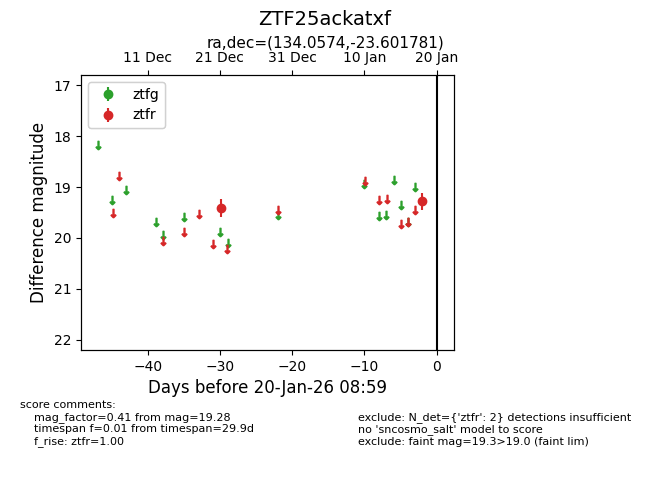
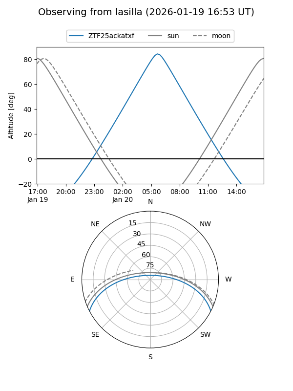
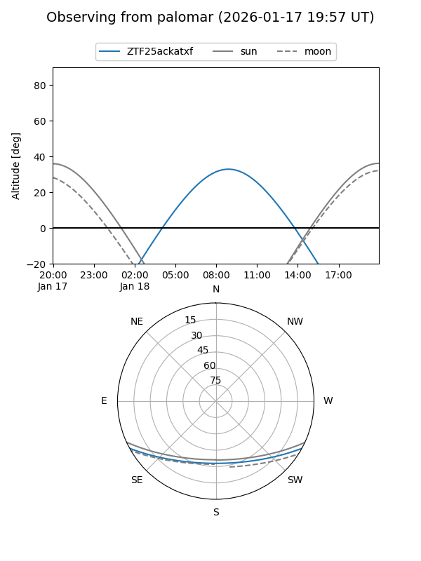

ZTF25ackatxf
Target ZTF25ackatxf at 2026-01-20 09:00
Aliases and brokers:
FINK: link
Lasair: link
ALeRCE: link
alt names
ZTF25ackatxf (ztf,fink_ztf)
Coordinates:
equatorial (ra, dec) = 134.0574,-23.60178
equatorial (HMS+DMS) = 08:56:13.77,-23:36:06.41
galactic (l, b) = (249.0888,+13.87953)
Flags:
Photometry:
last ztfr=19.28
2 ztfr detections
Lightcurve

Visibility


Additional plots